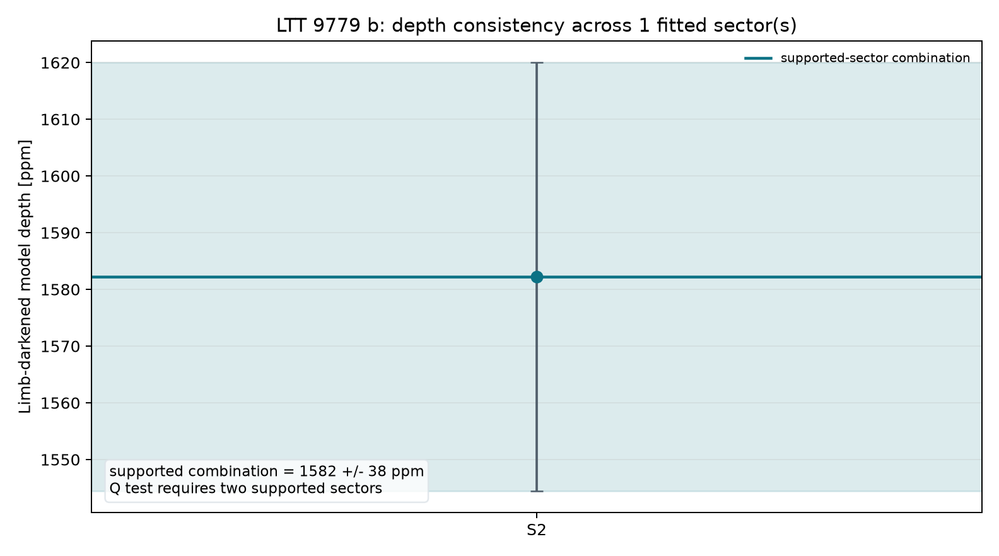
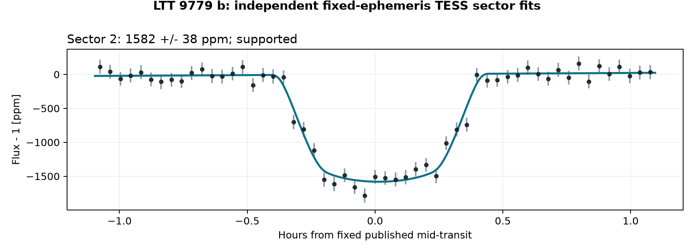

Data source notes
SHA-256, LF-normalised text
fe4565d1df9a8ec7e6443b2044e1a5de1bf78329c8321ca6141743bc8f8e7065Browse 9 versioned evidence files. Table previews simply display stored rows. Consult the project report for the source, processing steps, and inference assumptions.


fe4565d1df9a8ec7e6443b2044e1a5de1bf78329c8321ca6141743bc8f8e7065| pl_name | hostname | ra | dec | pl_orbper | pl_tranmid | pl_trandur |
|---|---|---|---|---|---|---|
| LTT 9779 b | LTT 9779 | 358.6688767 | -37.6282237 | 0.792052 | 2458354.2143 | 0.3656119 |
7975a78599b8e0bc3e2de0e06aa5b732f76ff79cf1b9eba6750e5513b5127e57d8d264184915509dc8df0ebc77ce3d96f252de99759af46b260187a2ee2ebc0b| quantity | value | unit |
|---|---|---|
| sector | 2 | TESS sector |
| period_days | 0.792052 | days; NASA Exoplanet Archive |
| published_duration_hours | 0.3656119 | hours; NASA Exoplanet Archive |
| a_over_rstar | 3.80441230769 | fixed from saved a and stellar radius |
982fb3a307617e3f0569f53e60fd721ba847a824dcbff44e97df95155f241d71| sector | filename | transit_events | n_points | transit_supported | delta_bic | timing_shift_hours |
|---|---|---|---|---|---|---|
| 2 | tess2018234235059-s0002-0000000183985250-0121-s_lc.fits | 33 | 2116 | True | 2110.27344 | 0.01884505062 |
279481ebace20866d2d12ad8b0f99b316d9ef6941bb85d88c6411755852f9456b52a234e36571bde94b9288beca0ac56c31e1c5b000991a15404ef1ed6071c14075161f8d766d8877264affad870c85abfdf54becdbe18c0f29acd41eaebe26a9f8d7ef803f7cd46bf209bd27c07fd52bcc6a37510170e6bb9b09eb7c1215dbe08a2f16612af6b5d78afe55469ed9ec9313edec2e316c56c3422c5ada7b10dd5SHA-256 values verify the stored files. They do not independently validate the scientific analysis. Rebuild this page with python scripts/evidence_catalog.py followed by python scripts/render_evidence_page.py.